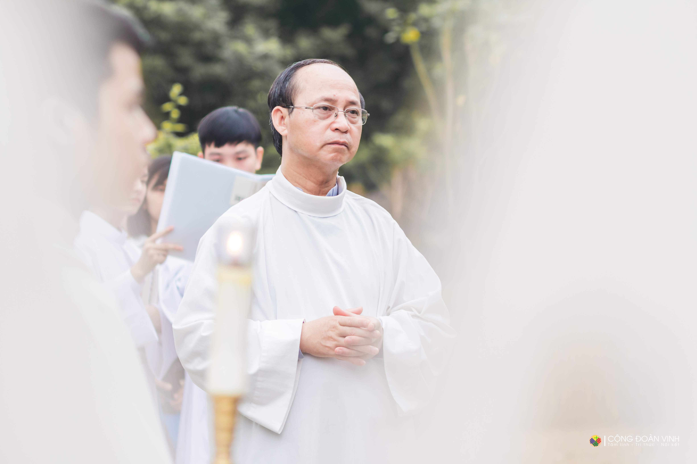

Cộng đoàn Giáo phận Vinh - Hà Tĩnh tại Hà Nội
Hiện là ngôi nhà chung của hơn 1000 thành viên, gồm các gia đình công giáo, các anh chị cựu và các bạn sinh viên – những người con chủ yếu của Giáo phận Vinh và Giáo phận Hà Tĩnh đang sinh sống, làm việc và học tập tại thủ đô Hà Nội.


Giới thiệu chung
Cộng đoàn đã nhận Chị Thánh Têrêsa Hài Đồng Giêsu làm bổn mạng và được coi sóc, hướng dẫn bởi Cha Linh hướng Gioan Lưu Ngọc Quỳnh. Cộng đoàn đã thực sự trở thành một môi trường nuôi dưỡng đức tin và thực hành đời sống đạo cho các bạn sinh viên đang học tập và làm việc tại thủ đô Hà Nội này.
Thánh Nữ Bổn Mạng
Têrêsa Hài Đồng Giêsu
Cha Linh Hướng
Gioan Lưu Ngọc Quỳnh


Tôn chỉ hoạt động
Tâm linh
Về Tâm linh, từ nhiều năm qua, Cộng đoàn luôn tổ chức các thánh lễ, các buổi sinh hoạt, cầu nguyện nhằm tạo cho thành viên một đời sống đạo lành mạnh, sống động, tích cực... thông qua những hoạt động thường kỳ như thánh lễ tối thứ 6 hàng tuần tại đền Giêrađô – giáo xứ Thái Hà, thánh lễ vào Chúa nhật đầu tháng, các buổi cầu nguyện Taize, nguyện ngắm, suy niệm Lời Chúa…
Tĩnh tâm tại Đan Viện Sito Châu Sơn
Tri Thức
Về Tri thức, Cộng đoàn luôn coi trọng việc nâng cao tri thức cho các thành viên, đặc biệt cổ vũ việc học hỏi, tìm hiểu Kinh Thánh, giáo lý. Đặc biệt, vào mùa Phục sinh hàng năm, Cộng đoàn tổ chức cuộc thi Tri thức Tôn giáo dựa trên tinh thần đó.
Cuộc thi: "Tri Thức Tôn Giáo"
Nối kết
Về Nối kết, Cộng đoàn đã quy tụ và luôn mời gọi những anh chị em thuộc Giáo phận Vinh, Giáo phận Hà Tĩnh đang sinh sống, học tập, làm việc tại Hà Nội, cùng những ai có thiện chí đến với Cộng đoàn. Đồng thời, Cộng đoàn luôn giữ mối quan hệ gần gũi với giáo xứ Thái Hà, Dòng Chúa Cứu Thế Hà Nội, cùng các hội đoàn, các tổ chức khác... trong mối tương quan của những con người đồng đạo. Một số hoạt động thường niên trong tôn chỉ này như: giải đá bóng nam nữ, các hoạt động thiện nguyện, sinh hoạt thường kỳ,...
Giải bóng đá Nam Cộng đoàn
Các cộng đoàn thành viên
Cộng đoàn Vinh - Hà Tĩnh bao gồm 9 Cộng đoàn thành viên quy tụ lại với nhau theo từng khu vực: CĐ Don Bosco, CĐ Phaolô Trở lại, CĐ Gioan Tông đồ, CĐ Phanxicô Assisi, CĐ Mẹ Vô Nhiễm, CĐ Antôn Padua, CĐ Đaminh Savio, CĐ Phanxicô Xaviê, CĐ Cựu sinh viên và Gia đình Công giáo.
Cộng đoàn Don Bosco

- Năm thành lập: 2008
- Khu vực hoạt động: Cổ Nhuế - Cầu Giấy - Dịch Vọng, Chùa Láng, Mỹ Đình..
- Trường ĐH quanh khu vực: ĐH Ngoại Thương, ĐH Luật Hà Nội, ĐH Sư Phạm, ĐH Mỏ địa chất, Học viện tài chính....
- Địa điểm sinh hoạt: Nhà thờ Cổ Nhuế
- Ban Tân sinh viên: Maria Trần Thị Phương - 0326557615
Cộng đoàn Phaolô Trở Lại

- Năm thành lập: 2008
- Khu vực hoạt động: Quận Hoàng Mai – Hai Bà Trưng
- Trường học quanh khu vực: ĐH Bách Khoa HN, ĐH Xây Dựng, ĐH Kinh tế quốc dân, ĐH Kinh doanh & Công nghệ, ĐH Kinh tế kỹ thuật công nghiệp…
- Địa điểm sinh hoạt: Nhà thờ Làng Tám
- Ban Tân sinh viên: Phê Rô Nguyễn Quý Huyền - 0837745859
Cộng đoàn Đa Minh Savio

- Năm thành lập: 2012
- Khu vực hoạt động: Bắc Từ Liêm - Tây Tựu - Cầu Diễn, Nhổn, Mai Dịch, Mỹ Đình, Hoài Đức...
- Trường ĐH quanh khu vực: ĐH Công Nghiệp HN, ĐH Thương Mại, ĐH Quốc Gia, ĐH Tài Nguyên và Môi Trường, ĐH Sư Phạm..
- Địa điểm sinh hoạt: Nhà thờ Đình Quán
- Ban Tân sinh viên: Giuse Lê Văn Vũ- 0945751604
Cộng đoàn Gioan Tông Đồ
- Năm thành lập: 2008
- Khu vực hoạt động: Quận Đống Đa - Thanh Xuân
- Trường ĐH quanh khu vực: Học viện Ngân hàng, ĐH Văn Hóa, Đh Giao Thông vận tải, ĐH Y HN, ĐH Dược HN, ĐH
Công Đoàn, ĐH Thủy Lợi,...
- Địa điểm sinh hoạt: Phòng giáo lý đền Giê-ra-đô, giáo xứ Thái Hà
- Ban Tân sinh viên: Maria Hoàng Thị Thơ - 0964288099
Cộng đoàn Mẹ Vô Nhiễm
- Năm thành lập: 2008
- Khu vực hoạt động: Quận Thanh Xuân – Đống Đa
- Trường học quanh khu vực: ĐH Thủy Lợi, ĐH Bách Khoa, Nhạc viện Hà Nội, ĐH Kinh tế quốc dân…
- Địa điểm sinh hoạt: Nhà thờ Hàng Bột
- Ban Tân sinh viên: Antôn Trần Văn Quyền - 0963350463
Cộng đoàn Antôn Padua
- Năm thành lập: 2009
- Khu vực hoạt động: Thanh Xuân – Linh Đàm - Đống Đa
- Trường ĐH quanh khu vực: ĐH Y Hà Nội,ĐH Luật, ĐH Dược HN, ĐH Bách Khoa, Hv Ngân Hàng,…
- Địa điểm sinh hoạt: Phòng giáo lý đền Giê-ra-đô, giáo xứ Thái Hà
- Ban Tân sinh viên: Giuse Nguyễn Hoàng Anh - 0833454956
Cộng đoàn Phanxico Assisi
- Năm thành lập: 2008
- Khu vực hoạt động: Quận Thanh Xuân – Hà Đông
- Trường học quanh khu vực: ĐH Kiến Trúc, HV Y Dược Học cổ truyền, ĐH sư phạm nghệ thuật Tw, ĐH Hà Nội, ĐH
- Công nghệ GTVT, Hv Bưu Chính viễn thông, CĐ Y Dược…
- Địa điểm sinh hoạt: Nhà thờ Phùng Khoang
- Ban Tân sinh viên: Giuse Phạm Đình Học Khoa - 0981315499
Cộng đoàn Phanxico Xaviê
- Năm thành lập: 2014
- Khu vực hoạt động: Học Viện Nông Nghiệp Việt Nam
- Địa điểm sinh hoạt: tại nhà các thành viên
- Ban Tân sinh viên: Nguyễn Xuân Khánh - 0368123862
Cộng đoàn Cựu Sinh viên và Gia đình Công Giáo
- Năm thành lập: 2010
- Nơi quy tụ của những anh chị em đã ra trường và các gia đình công giáo - Giáo phận Vinh - Hà Tĩnh tại Hà Nội
- Địa điểm sinh hoạt: tại nhà các thành viên
Một lần nữa Cộng đoàn Vinh - Hà Tĩnh tại Hà Nội xin được gửi lời chúc mừng các sĩ tử đã vượt vũ môn thành công. Giờ đây các bạn đã là những tân sinh viên mang trên mình những hoài bão và ước mơ đến Hà thành. Nơi đất khách quê người, Cộng đoàn cũng thấu hiểu được những nỗi lo lắng nằm ngoài việc học tập của các bạn. Vậy nên, Cộng đoàn rất sẵn lòng được trở thành một người bạn đồng hành cùng các bạn trong hành trình sắp tới. Các bạn đã sẵn sàng trải nghiệm những điều thú vị tại ngôi nhà chung này chưa? Hãy để lại thông tin ở phía dưới nhé!
Đăng ký thông tin Tân Sinh Viên